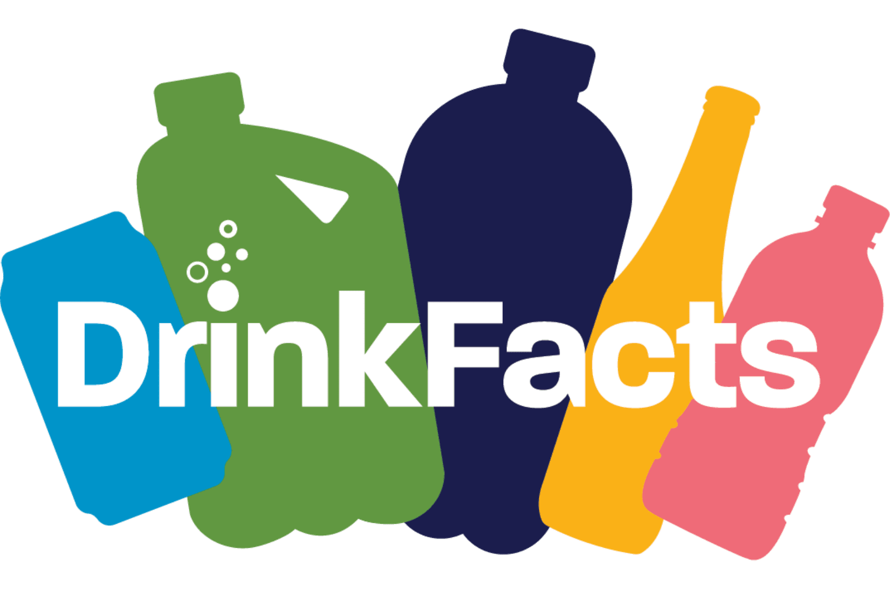

My Work
Real-world development experience
B&K Vibro Website Development
Developed and customized responsive website pages for B&K Vibro's corporate website using WordPress and WPBakery.
Role: WordPress Developer
Responsibilities:
- Created responsive website pages using WPBakery page builder.
- Converted design requirements into functional WordPress layouts.
- Customized page sections, spacing, typography, and styling.
- Ensured responsive behavior across desktop, tablet, and mobile devices.
- Managed WordPress content and frontend improvements.
- Collaborated with developers to resolve UI issues.
AFECC Website Development
Developed a custom WordPress website using Gutenberg editor, ACF fields, and custom frontend development. Created dynamic layouts, reusable components, and responsive page structures.
Role: WordPress Developer
Responsibilities:
- Created custom website sections using Gutenberg editor.
- Developed frontend layouts using HTML, CSS, and JavaScript.
- Converted custom designs into dynamic WordPress templates.
- Integrated Advanced Custom Fields (ACF) for dynamic content management.
- Created and managed custom post types for different content sections.
- Developed reusable layouts for inner pages, posts, and custom post type pages.
- Ensured responsive design across desktop, tablet, and mobile devices.

DrinkFacts Australia
Developed a responsive WordPress website using Elementor Pro, implementing custom HTML, CSS, and JavaScript to create interactive user experiences and reusable website sections.
Role: WordPress Developer
Responsibilities:
- Developed website pages using Elementor Pro.
- Built responsive layouts for desktop, tablet, and mobile devices.
- Created custom sections using HTML, CSS, and JavaScript.
- Implemented interactive popup functionality using Elementor Pro.
- Customized website styling to match design requirements.
- Optimized layouts for improved user experience and performance.
- Tested website compatibility across different browsers and screen sizes.

Zakat Calculator WordPress Plugin
Built a custom WordPress plugin with dynamic settings, calculations and customizable styling options.

Prayer Timetable Plugin
Created a WordPress plugin for managing prayer schedules with admin controls and frontend display.

Website Performance Optimization
Improved website speed by analyzing plugins, assets, images and performance issues.